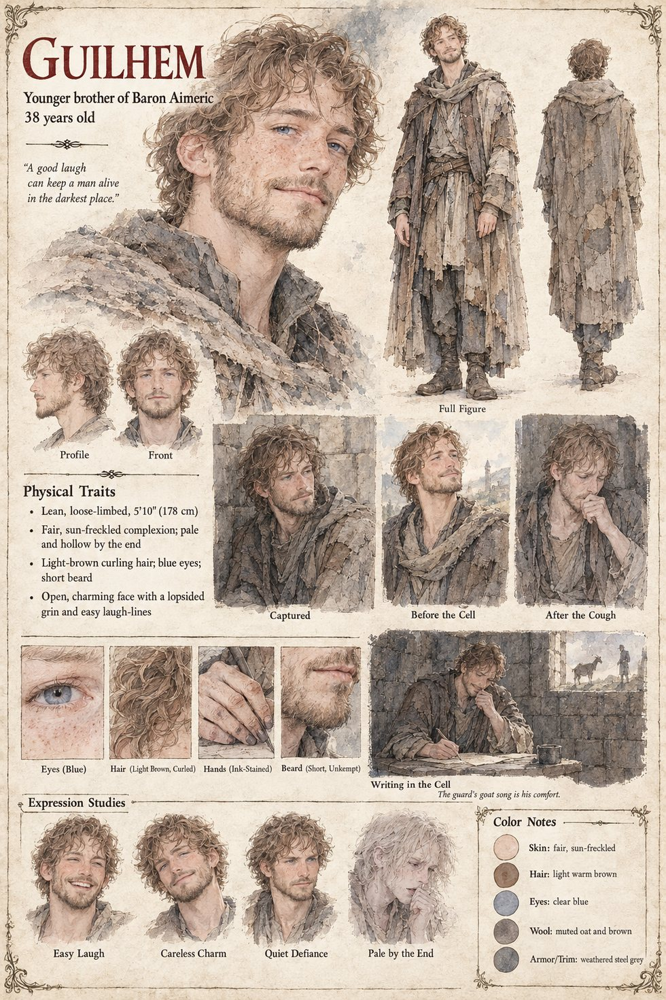

Guilhem
Younger brother of Baron Aimeric · hostage of the Count of Rocafort · 38 years old
A lean, charming, careless, good-natured man of thirty-eight with a talent for being liked, whom his brother the baron sends in the late summer with forty men to take a small weir on the Sarrac, which both baron and count have claimed for forty years. The count's riders are already waiting at the ford. They take the weir, forty men, two banners and the baron's brother in a morning, and send back a courteous letter naming a price of four hundred solidi, to be counted at Rocafort before the count's chaplain.
His four letters are, like everything he has written, funny. The count's cook has resolved to starve him by degrees, though the sauces are the real tragedy; the Basque guard has taught him a song of forty verses about a goat. The last says in the same light tone that the cell is damp, that he is coughing a little, and that he would be glad to be home by the winter feast. He dies on a pallet of straw on the fourteenth of Lorren, with the guard sitting by him singing the sixth verse. The count, being a man of honor, returns the body without ransom, and keeps the weir. It is forty-two days before the sum would have fallen due. The baron folds the letter in three, and puts it in the box with the other four.